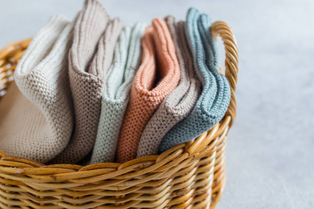

There isn't anything like homemade spun goods that makes a home just a little more homey! From afghans to dish cloths you can find it all here.
Experience the touch of quality and beauty to your home décor with our unique and timeless handcrafted designs.

Paragraph 1 of Image 1

Paragraph 1 of Image 2

Paragraph 1 of Image 3

Paragraph 2 of Image 2